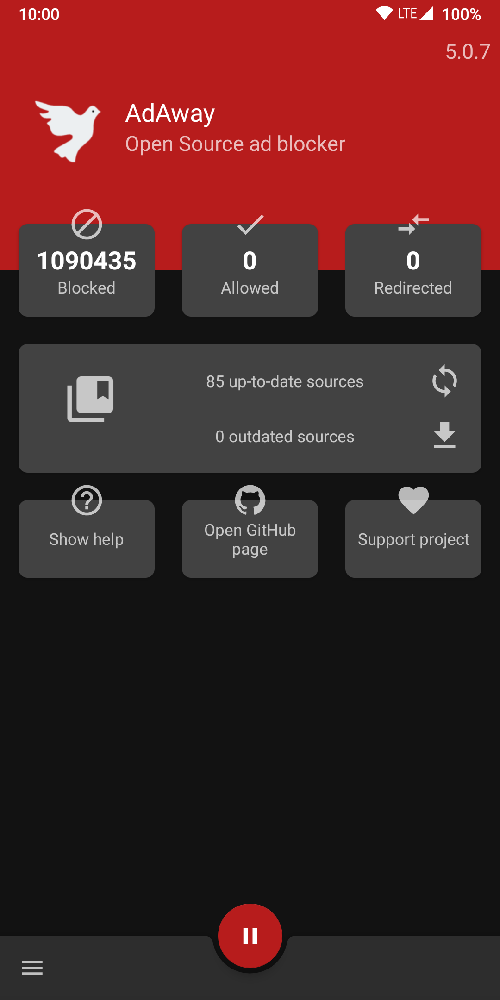
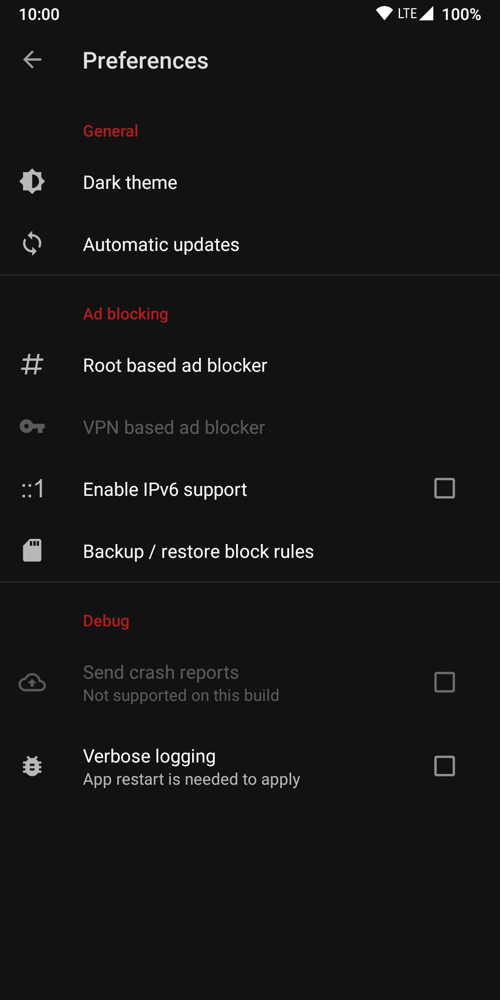
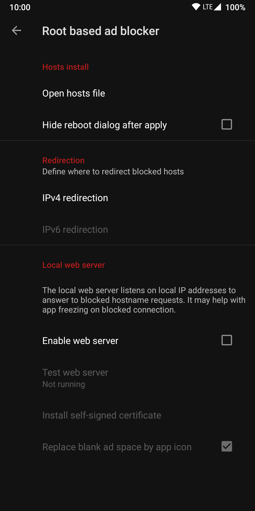
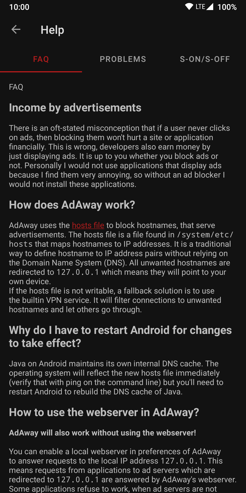

01
系统级拦截
规则在系统解析层生效：装好并应用一次，应用内的横幅、网页弹窗、后台跟踪请求一起拦下，不挑应用也不挑浏览器。
开源 · 系统级拦截 · 没有 root 也能用
AdAway 是 Android 平台的开源广告拦截工具：把广告与跟踪域名在本机解析层拦下——应用里的横幅、网页里的弹窗、后台的跟踪请求，规则应用一次，全机一起生效。
整理版本 6.1.4 · 包名 org.adaway · Android 8.0 及以上
BLOCK0.0.0.0 ads.example.com
BLOCK0.0.0.0 track.example.net
BLOCK0.0.0.0 banner.example.org
规则已应用 · 全机生效中
Features
它不接管某一个应用，而是在系统解析层动手：一次应用规则，整个设备上的广告与跟踪请求一起被拦下。
01
规则在系统解析层生效：装好并应用一次，应用内的横幅、网页弹窗、后台跟踪请求一起拦下，不挑应用也不挑浏览器。
02
有 root 走 hosts 模式直接生效；没有 root 用本地 VPN 模式，同样覆盖全机。装好后按设备情况选一条即可。
03
内置一条常用规则源，也可以按需添加、替换第三方 hosts 源——拦多拦少，由规则列表决定。
04
允许列表放行被误拦的域名，阻止列表补上漏网之鱼，重定向规则留给进阶场景；改完重新应用一次即生效。
05
GPLv3+ 许可，代码公开可查；应用没有账号体系，不需要注册登录，拦截只发生在设备本机。
06
安装包 13.31M；hosts 模式把规则交给系统解析层，常驻开销很小，本地 VPN 模式的开销同样有限。
Modes
两条路径用的是同一份规则列表，拦截效果接近；差别主要在系统权限、通道占用与适用人群。
| 对比项 | hosts 模式 | 本地 VPN 模式 |
|---|---|---|
| 前提 | root 权限，或使用 Magisk Systemless Hosts | 无需 root |
| 拦截方式 | 规则写入系统 hosts 表，由系统解析层拦截 | 建立仅在本机生效的 VPN，断开广告连接 |
| 通道占用 | 不占 VPN 通道 | 占用系统唯一的 VPN 通道 |
| 备注 | 用 Magisk 模块可避免改动系统分区 | 系统要求常驻通知，省电策略可能中断服务 |
不确定选哪条？没有 root 就从本地 VPN 模式开始；之后想换成 hosts 模式，切换后回主界面重新应用一次规则即可。具体步骤见安装说明。
Screens
主界面看拦截状态与规则源，偏好设置里管理运行方式、清单与本地 Web 服务。




截图来自项目公开资料，不同版本界面略有差异，以设备上实际安装的版本为准；展示素材版权归原作者所有。
How it works
四步走：拉规则、合清单、应用生效、全机拦截——整个过程都在设备本机完成。
STEP 01
从选定的 hosts 源下载最新规则列表，默认已内置一条常用源。
STEP 02
把多份源的条目合并成一份拦截表，重复域名自动去掉。
STEP 03
hosts 模式写入系统 hosts 表；本地 VPN 模式由应用接管过滤出站连接。
STEP 04
应用、浏览器与系统组件的广告、跟踪请求在解析阶段被拦下。
边界说明：域名独立的广告最适合拦截；广告与内容同域的投放（如部分视频平台、社交信息流），任何 hosts 类工具都有天然边界，详见常见问题。
FAQ
关于权限、拦截效果、耗电与更新的高频疑问，先在这里对号。
能。6.x 上非 root 设备默认走本地 VPN 模式：授权一条仅在本机生效的 VPN 后即可全机拦截。代价是会占用系统唯一的 VPN 通道，且系统会要求一条常驻通知。
先确认规则是否已应用、应用有没有被省电策略杀掉；系统开着「私人 DNS」的话先关闭再试。移动流量下漏拦，检查接入点（APN）是否配置了代理；Chrome 里漏拦则留意数据压缩代理——这几类是「拦不住」的常见原因。
拦不干净。这类投放把广告和内容放在同一批域名下，hosts 拦截只能对独立的广告域名生效，属于方法本身的边界；把 youtube.com 这类主域直接塞进阻止列表，会导致相关应用整体不可用，不建议这样做。
hosts 模式把规则交给系统解析层，几乎不增加常驻开销；本地 VPN 模式需要保持一条本机 VPN 服务运行，开销同样有限，但会影响「同时只用一条 VPN」的使用习惯。
广告域名一直在变，建议每一两周在主界面执行一次「下载并应用」。规则更新与安装包升级是两回事：前者在应用内完成，后者等新版发布后替换安装文件即可。
安装文件资源整理在夸克网盘，入口在本页按钮与下载页里，转存后把 APK 传到手机安装即可；下载页附有版本与校验值对照表，安装前可以核对一遍。